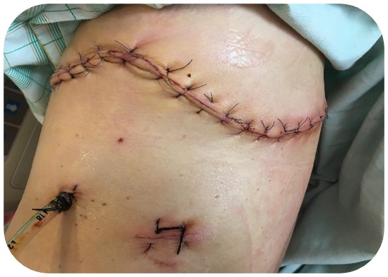
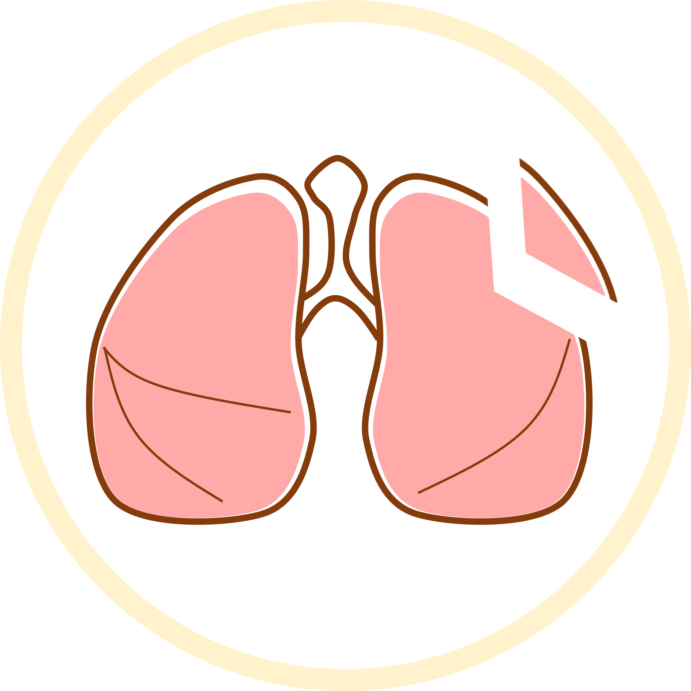
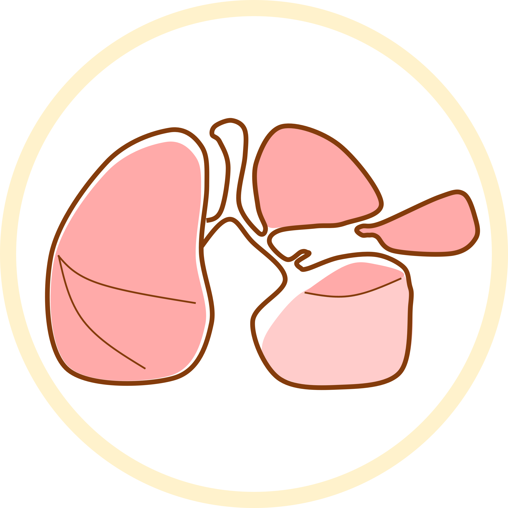
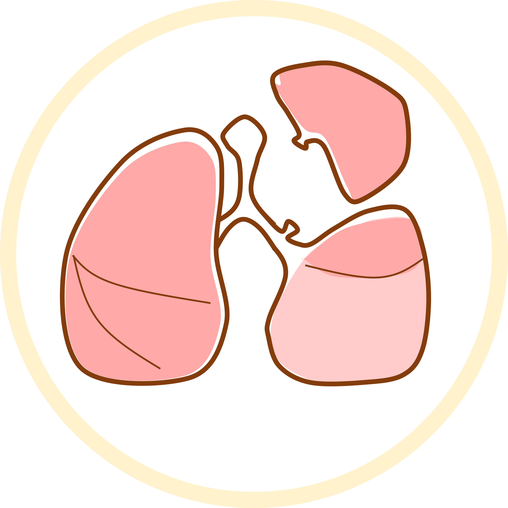

認識手術
手術進行方式
主要分為胸腔鏡手術(微創手術)或傳統開胸手術，現今胸腔鏡手術已經非常成熟，大部份病人可藉此方式切除病灶，唯少數病人因廣泛性沾黏或不易控制之出血須採傳統開胸方式。
| 手術方式 | 胸腔鏡手術 | 傳統開胸 |
| 傷口大小 | 1-3 個小傷口 | 15-30 公分 |
| 傷口照片 |  |
 |
手術切除範圍
醫師會依照病灶大小，決定安全的切除範圍並兼顧保留病人較多的肺功能，常見的切除範圍(大小)，分為肺楔型切除術、肺節切除術及肺葉切除術。

肺楔型切除術
Wedge resection

肺節切除術
Segmentectomy

肺葉切除術
Lobectomy
手術時間
依切除範圍及個人肺部狀況(沾黏或肺實質健康狀況)需要的手術時間不一，大部分情況下手術加上麻醉時間大約3-5小時不等。
手術後可能出現的併發症
大部分的併發症並不嚴重。
| 常見併發症 | |
|---|---|
| 1. | 因麻醉導致肺擴張不全，進而演變成肺炎或呼吸功能不全 |
| 2. | 因感染發炎導致肺部嚴重沾黏，術後胸管出現持續氣漏情形 |
| 3. | 皮下氣腫 |
| 4. | 手術傷口感染 |
| 罕見併發症 | |
| 1. | 支氣管肋膜廔管 |
| 2. | 氣/血胸、乳糜胸 |
| 3. | 膿胸 |
| 4. | 出血 |
| 5. | 血液感染 |
| 6. | 橫膈神經或喉返神經損傷 |
住院多久
依手術術式及恢復狀況不同而有差異，恢復順利約4-6天可出院。術後若發生併發症可能延長住院時間。
接受手術需要先做的準備
未住院前的準備
| 1. | 肺功能的加強: 請參考肺部復健運動影片。 |
|---|---|
| 2. | 營養的補充: 大多數病人營養均衡即可，若有慢性病的則需特別注意該疾病飲食上的限制。 |
| 3. | 慢性病控制: 尤其是糖尿病、高血壓及心臟疾病盡可能在手術前期控制正常範圍。 |
| 4. | 術前戒煙: 若有抽煙習慣，強烈建議術前戒煙(宜一個月以上)以減少術後發生肺炎的機會。 |